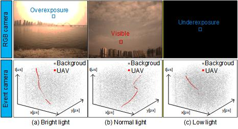
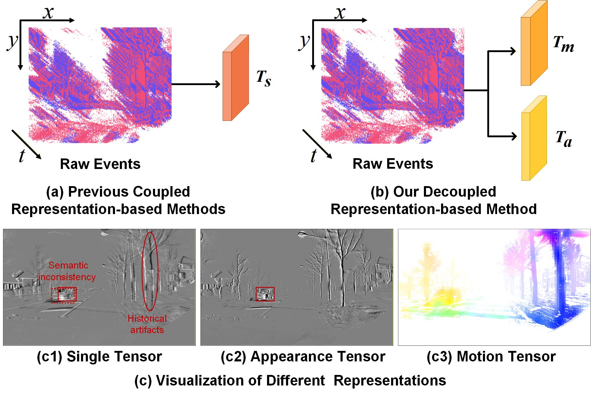
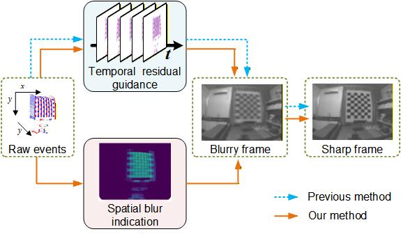

Nuo Chen (陈诺)
National University of Defense Technology (NUDT)
Research Gate |
Github |
Google Scholar
Email: chennuo97@nudt.edu.cn
Brief Bio
I received my M.S. degree in Mechanical and Electrical Engineering from Central South University (CSU) in 2022 and my B.E. degree in Mechanical Design, Manufacture and Automation from CSU in 2019.
I am currently pursuing my Ph.D. degree in Information and Communication Engineering at the National University of Defense Technology (NUDT).
My research interests focus on event-based vision and computational imaging, particularly
on neuromorphic camera image processing and event-based object detection.
News
2025.09 | Our paper "Motion and Appearance Decoupling Representation for Event Cameras" is accepted by IEEE TIP.
2025.07 | Our paper "Event-based Tiny Object Detection: A Benchmark Dataset and Baseline" is accepted by ICCV 2025.
2025.05 | Our paper "Event-based Motion Deblurring with Blur-aware Reconstruction Filter" is accepted by IEEE TCSVT.
2025.07 | Our paper "Event-based Tiny Object Detection: A Benchmark Dataset and Baseline" is accepted by ICCV 2025.
2025.05 | Our paper "Event-based Motion Deblurring with Blur-aware Reconstruction Filter" is accepted by IEEE TCSVT.
Publications --- 2025




Awards & Honors
2025 | National Scholarship (Ministry of Education, Top 2%)
Last updated: 2025-12-06